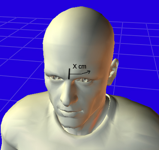
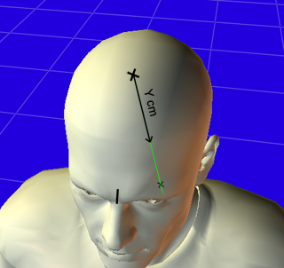
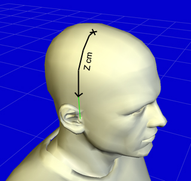
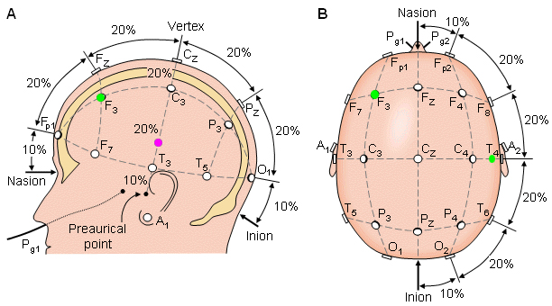

1
X distance from midline

Mark the X cm distance from the midline across the forehead.
TMS Measurement App calculates F3 placement from three head measurements and saves your client records on your device.
Enter tragus-to-tragus, nasion-to-inion, and head circumference to get X and adjusted Y distances with a clear explanation.
View on GitHubEnter the three head measurements first. Then use the calculated distances to mark the site. The images below come from the Beam F3 guide, which also labels a distance Z. The app calculates X, Y and adjusted Y, not Z.

Mark the X cm distance from the midline across the forehead.

From the vertex (Cz), measure Y cm along the scalp toward the forehead mark.

Reference diagram: Z joins the two marked points on the side of the head. This app does not calculate Z.
The app calculates X and Y from your measurements and applies the Beam F3 adjustment. Use the steps below to mark the site.
The EEG reference map helps confirm the F3 region relative to the 10-20 system. Use it alongside the calculated distances for placement.
The app stores every measurement locally, so clinicians can review previous sessions without network access.

Record each TMS session under its measurement: stimulation intensity, pulses, frequency, and more. Every session is saved locally on the device, so you can review a client's full treatment history offline.
Enter the three head measurements in centimeters to calculate the Beam F3 distances used for site marking.
X = 0.1154 × HC, Y = 0.2637 × ((TTT + NI) / 2), Yadj = Y + 0.35 cm.